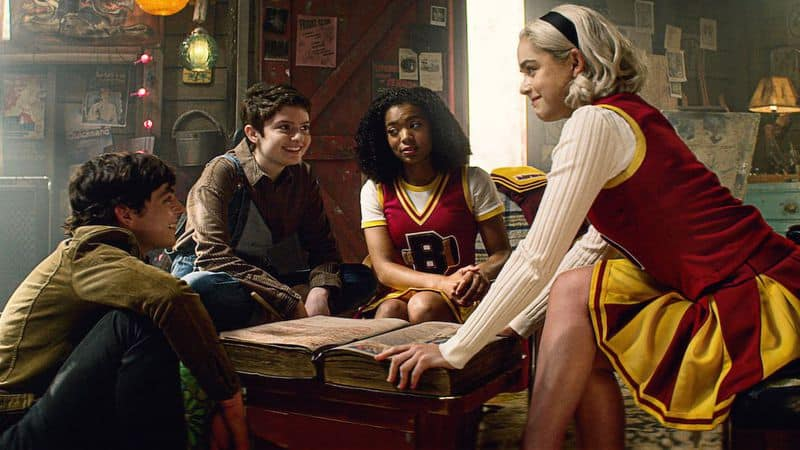

"O Mundo Sombrio de Sabrina" é uma série televisiva que mergulha o espectador em um universo repleto de magia, mistério e dualidade. Inspirada nos quadrinhos da Archie Comics, a produção da Netflix cativa os fãs com uma trama envolvente que mescla elementos do sobrenatural, bruxaria e os desafios da adolescência. A história gira em torno de Sabrina Spellman, uma jovem meio-bruxa e meio-humana, interpretada por Kiernan Shipka, que enfrenta o dilema de conciliar seu legado sobrenatural com sua vida cotidiana. Criada por suas tias, Zelda e Hilda Spellman, Sabrina vive na cidade fictícia de Greendale, onde lida não apenas com os desafios da adolescência, mas também com as complexidades de seu destino como uma poderosa bruxa.A série explora o conflito interno de Sabrina enquanto ela tenta equilibrar sua identidade dupla: a vida como uma estudante comum do ensino médio e os deveres que vêm com seu legado mágico. Ao longo das temporadas, Sabrina se vê envolvida em intrigas sobrenaturais, enfrentando desafios que testam não apenas seus poderes, mas também seus princípios morais. O Mundo Sombrio de Sabrina oferece uma narrativa cativante, repleta de elementos sombrios, rituais ocultos e a luta entre o bem e o mal. Além disso, a série aborda temas contemporâneos, como identidade, lealdade, amor e sacrifício, proporcionando aos espectadores uma experiência envolvente e reflexiva.
Os personagens secundários também desempenham papéis significativos na trama, cada um contribuindo para o desenvolvimento da história e adicionando camadas de complexidade ao enredo. A relação de Sabrina com seus amigos, Harvey, Roz e Theo, assim como suas interações com figuras místicas como Lilith e o Senhor das Trevas, adicionam profundidade à narrativa, criando um ambiente fascinante para os espectadores explorarem.
Em "O Mundo Sombrio de Sabrina", o romance entre Sabrina Spellman e Nicholas Scratch, interpretados por Kiernan Shipka e Gavin Leatherwood, respectivamente, desempenha um papel significativo na trama ao longo das temporadas. Nicholas Scratch é um jovem bruxo talentoso e charmoso, introduzido como um dos colegas de Sabrina na Academia de Artes Invisíveis, onde ambos estudam magia. Desde o início, há uma atração mútua entre os dois personagens, e ao longo da série, esse relacionamento se desenvolve, enfrentando desafios e obstáculos. O romance entre Sabrina e Nick é marcado por altos e baixos. Eles compartilham momentos de intimidade e cumplicidade, formando um vínculo profundo que ultrapassa as barreiras entre a bruxaria e o mundo mortal. No entanto, a trama os coloca em situações complicadas, desafiando sua lealdade, confiança e comprometimento um com o outro.
Com uma atmosfera envolvente, trilha sonora marcante e um elenco talentoso, "O Mundo Sombrio de Sabrina" conquistou uma base de fãs dedicada, atraindo tanto os aficionados por histórias de bruxaria quanto os que buscam uma narrativa intrigante e cheia de reviravoltas. No entanto, a série chegou ao seu fim após quatro temporadas, deixando um legado de magia, aventura e um universo sombrio que cativou espectadores ao redor do mundo. Para os fãs, "O Mundo Sombrio de Sabrina" continuará sendo uma jornada emocionante e misteriosa, repleta de momentos memoráveis e personagens inesquecíveis.